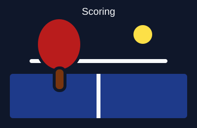
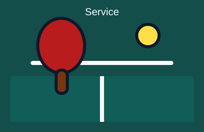
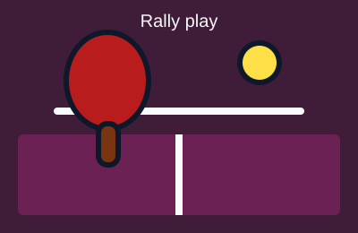

Official Match Rules
Table tennis matches are played according to standardized rules established by the International Table Tennis Federation (ITTF).
Core Scoring & Service Rules
- Scoring: A game is won by the first player to score 11 points with at least a 2-point lead.
- Service: The serve switches every 2 points until deuce (10-10), where service alternates every single point.
- Legal Serve: The ball must rest freely on an open palm, be tossed up at least 16cm, and struck so it bounces once on the server's side then once on the receiver's side.
- Rally Play: The ball must bounce once on the opponent's side of the table without touching the net on serve.
Rules at a Glance



Learn More
Review the full official regulations on the International Table Tennis Federation Handbook.